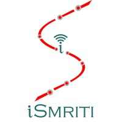
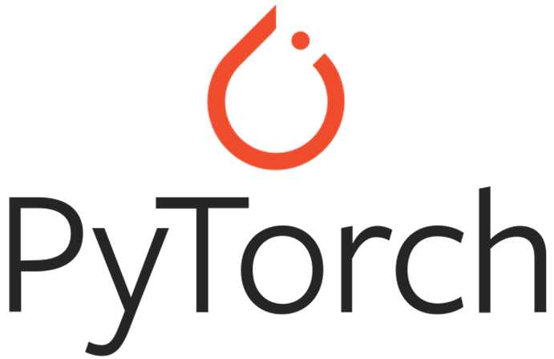

Hello
Here's who I am & what I do
Hi, I'm Ankith Reddy Avula. I'm an aspiring developer with a keen interest in creating meaningful and innovative projects. I love to explore new technologies and leverage them to build exciting applications.
Currently pursuing a Master of Science in Computer Science at the University of Texas Arlington, I have developed a strong foundation in programming languages such as C++, Java, and Python, as well as a range of technical skills and experience with technologies such as TensorFlow, PyTorch, Flask, Hadoop, Spark, and Git. During my studies, I have also completed several projects that have allowed me to apply my skills in practical settings, including developing an Audio Source separation model for the extraction of 4 different audio categories, a real-time facial emotion recognition system, and a traffic-aware scaling algorithm for the OpenFaaS platform.
Outside of coding, I enjoy hiking, reading, and exploring new cuisines. I'm dedicated to continuous learning and improving my skills to contribute effectively to the world of technology.
Experience
Research Intern
Samsung India | May 2021 - November 2021
- Developed an Audio Source separation model for extraction of 4 different audio categories from a given audio track using TensorFlow, UNets, Auto-Encoders, and Librosa
- Designed an Audio separation model which extracts the bass, drums, vocals, and other category audios from the given audio file implementing Fourier transforms
- Deployed a model that generates separated audios of the above categories with a mean absolute error(MAE) of 1.3733

Data Science Intern
Ismriti - IIT Kanpur | June 2019 - July 2019
- Developed a real-time facial emotion recognition system that recognizes and classifies the live facial emotion of the user using Python, CNN, TensorFlow, and OpenCV
- Designed a model that classifies the user face emotion into 7 categories namely happy, sad, neutral, fear, angry, disgust, and surprise
- Implemented a model that classifies the live facial expression of the user with an accuracy of 98%
Skills
-
Python
-

PyTorch -
TensorFlow
-
 HTML
HTML -
 CSS
CSS -
 JavaScript
JavaScript
-
 Apache Spark
Apache Spark -
Flask
-
 MySQL
MySQL -
Git
Teaching
Graduate Teaching Assistant
University of Texas Arlington | August 2023 - December 2023
Taught, graded and helped students for the course Design and Analysis of Algorithms (CSE 5311), held office hours to solve students queries and doubts
Education
Master of Science in Computer Science
University of Texas Arlington | August 2022 - May 2024
Relevant coursework: Algorithms, Web Development, Cloud Computing and Big Data, Machine Learning
Bachelor of Technology in Computer Engineering
Indian Institute of Information Technology Design and Manufacturing Kurnool | August 2018 - May 2022
Relevant coursework: Data Structures and Algorithms, Object Oriented Programming, Operating Systems, Computer Networks